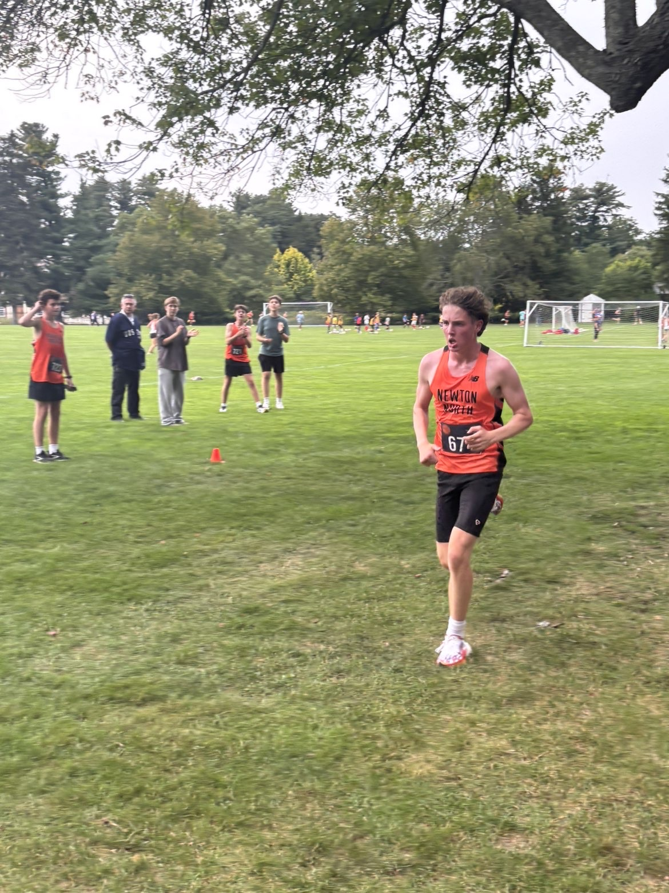
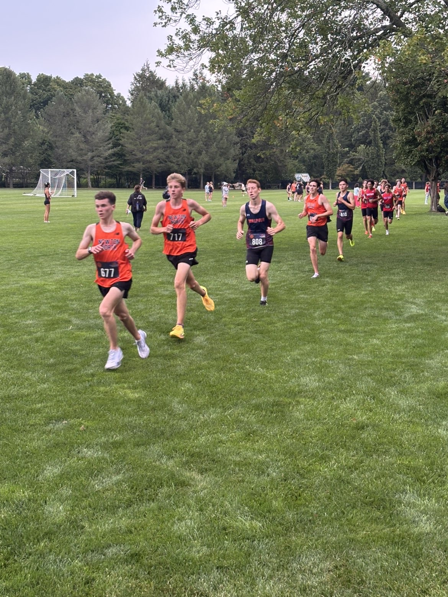
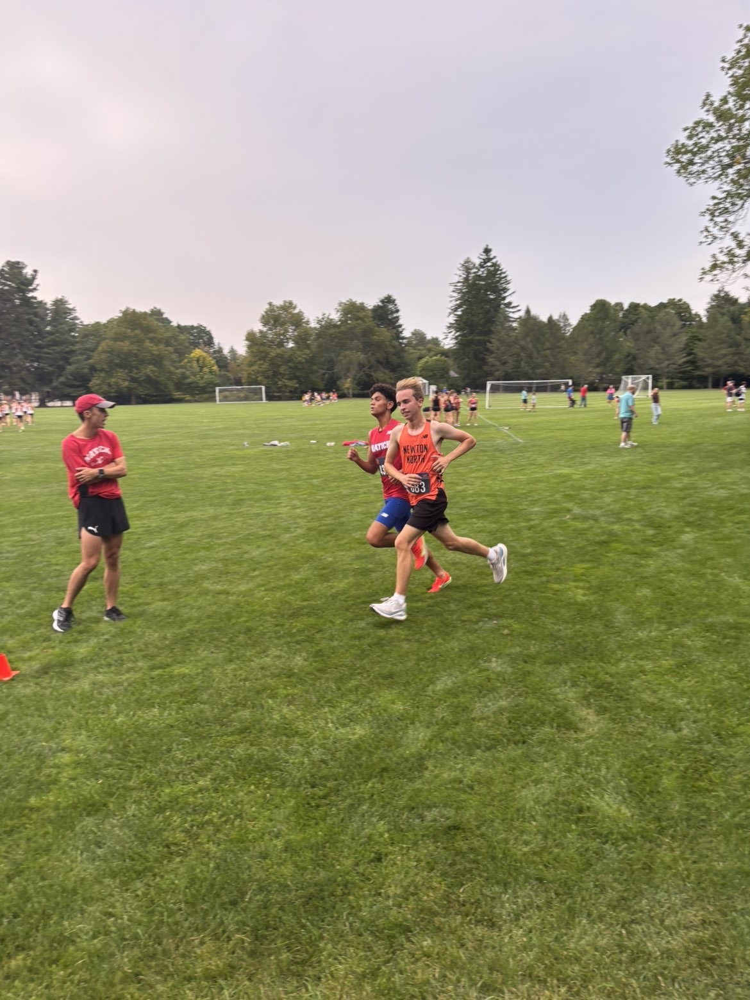
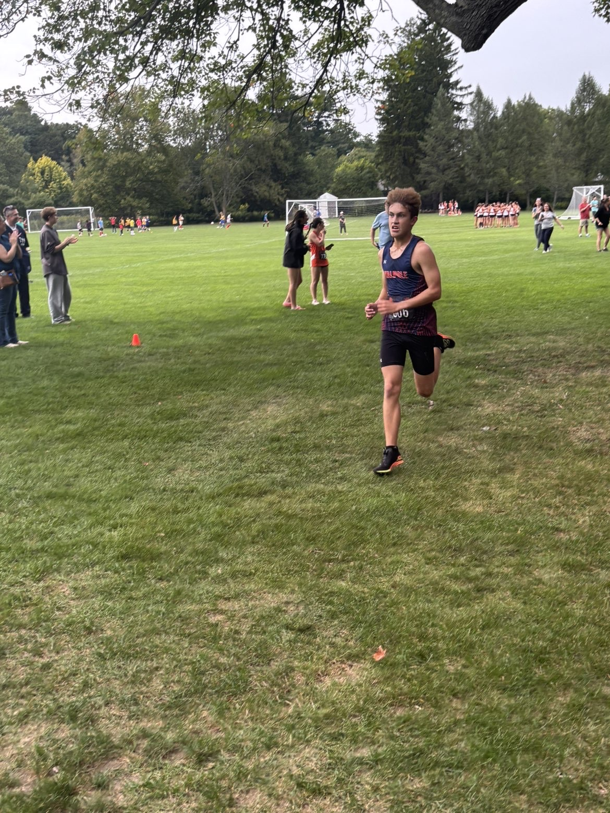
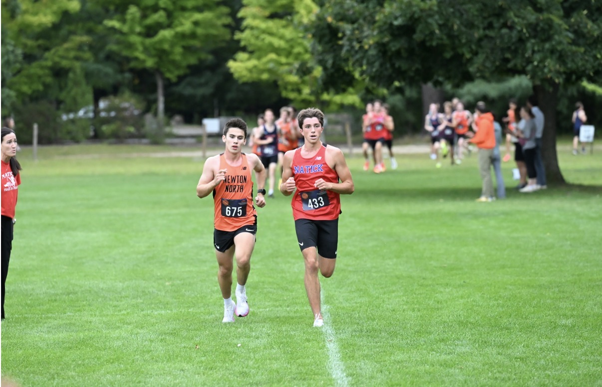
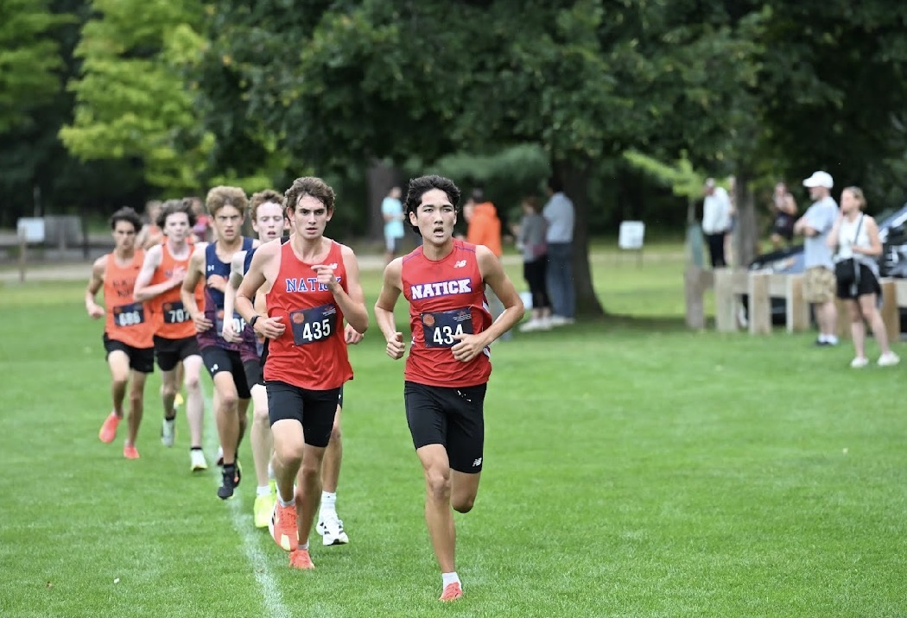

#7 Newton North v Walpole @ #9 Natick
The biggest meet of the week did not disappoint. Before we dive in, we need to note that Natick’s #1 and #2 returners, as well as Newton North’s #2 returner, did not race.
Starting off, this is a great win for the Newton North squad and proof of how much talent they hold. Ryan Costello won the meet overall in a new MA #1 time of 15:52. Costello PR’d by 60 seconds right out of the gate to show that he is here to challenge the rest of the state. Next, Alexander Daly (16:20) outkicked Natick’s Benjamin Gidelson (16:23) to take second place overall.

After this, Newton North’s depth was on full display. Colin Van Vliet (16:44) was only a freshman last year and started his sophomore campaign with a breakout race. Van Vliet placed fourth overall and hit a big 51-second PR. Mathew Gallo (16:48) and Reed Smith (16:54) rounded out their top five to place sixth and ninth overall. Watch out for Smith, as he had a bigger PR than both Van Vliet and Costello, knocking off 85 seconds.
Do the massive PRs for the Newton North squad stop there? Absolutely not. Lucca Biello came in as their #7, running a PR of 16:59. Yesterday, he shaved 104 seconds off his previous PR of 18:53! Edward Howell finished just in front of Biello, clocking 16:58 for his first-ever 5K. The craziest part of this squad is that four of their top returners weren’t even in their top seven yesterday. Be on the lookout for Will Kenneally, Lucas Allen, Jonah Penn, and Jamie Evans. Whatever is going on at Newton North, it’s clearly working.


When we wrote our list of sleeper teams, we were picturing they would come out toward the middle of the season. However, Walpole just blew all our expectations out of the water with a big win over Natick. Nate O’Neil led the squad to place fifth overall with a 29-second PR. Asher Kingman (16:49) and Joe Curran (16:52) finished right behind O’Neil to place seventh and eighth. Ethan Hamilton got 14th overall to finish his first-ever 5K in 17:01. Owen Ahlfont rounded out the squad in a time of 17:23. Although #9 Natick sat their top two runners, Walpole still took a big win over the squad, 25–30.

Though this was anything but a bad opener for the Natick squad. Benjamin Gidelson (16:23) ran a gutsy effort to place third overall and almost tie his PR. Brady Collins (16:54) and Alex Forte (16:55) both opened their seasons with PRs below the 17:00 barrier. Although Natick has lots of work to do, we trust their program and what that team can accomplish.


19th Annual Vineyard Invitational
At the Vineyard Invite, #15 Catholic Memorial had a day. Although it looked like this year’s squad would be led by Daniel Kaleba, he was actually beaten by their #2 returner, Gerard Stock. Stock and Kaleba went 2–3 in the race, running times of 16:05 and 16:08. Theo Fitzpatrick was not far behind the two runners, running 16:35 and finishing sixth overall. Jude Kaleba (17:22) and Finn Rosenbaum (17:41) rounded out the squad for a 34-point first place.
North Attleboro’s Anthony Malakidis had a very strong opener and won the race overall with a time of 15:56. Watch out for Malakidis, as he is one of the state’s top returners.
West Springfield @ #12 Longmeadow
Although the course is only three miles, Longmeadow still had a great opener. CJ Deliso won the meet overall in 15:35, which equates to a 5K in the low-16-minute range. After that, their next four runners all came in within 19 seconds of each other: Finn O’Connor (16:36), Henry Cournoyer (16:45), Jackson Root (16:46), and Aiden Kretschmar (16:55). Jacob Abebe, who is one of Longmeadow’s fastest runners, did not race yesterday. If he is able to run up with Deliso, they could be in a great spot come November.
Needham @ #3 Brookline
As we expected, both teams didn’t take this meet too seriously. Both teams tempo’d the race, with Brookline taking the top 12 spots. After that, Needham’s Connor Bobbin (17:22) came in with teammate Duncan Alexander (17:25), and their #1 returner did not enter the race. Although this was only a tempo, it’s still important to note that Brookline Warrior Ibrahim Abdel-Dayem (16:13) won the race, and Toby Paradise (16:15) placed second to beat out Liam Hartmann (16:16). Paradise could be a big player for the Warriors this season. Axel Bonnafoux (16:17), Elias Thomasson (16:18), Noah Karp (16:19), and Matt Ritter (16:19) also came in with Brookline’s top three.
Another important note would be in the JV race. Three Needham freshmen had a 2–3–4 finish on the difficult terrain of Larz Anderson Park: Tyler Mann (9:54), Rowen Nelson (9:56), and Sebastian Gowan (10:00). Be on the lookout for Needham singlets during the freshman races, as you should see multiple of them at the front.
Framingham v Wellesley @ Weymouth
Weymouth’s Patrick Geagan (14:38) took the overall win here, followed by two Wellesley runners, Daniel Goldberg (14:54) and Nate Flynn (15:08). Wellesley took the overall win here, placing four of their runners in the top seven spots. Though the Framingham squad stood on business, even without their #1 returner. The squad took a big win over Weymouth, with James Feaster (15:27) and Nathan Marden (15:32) placing fourth and fifth overall to lead the squad.